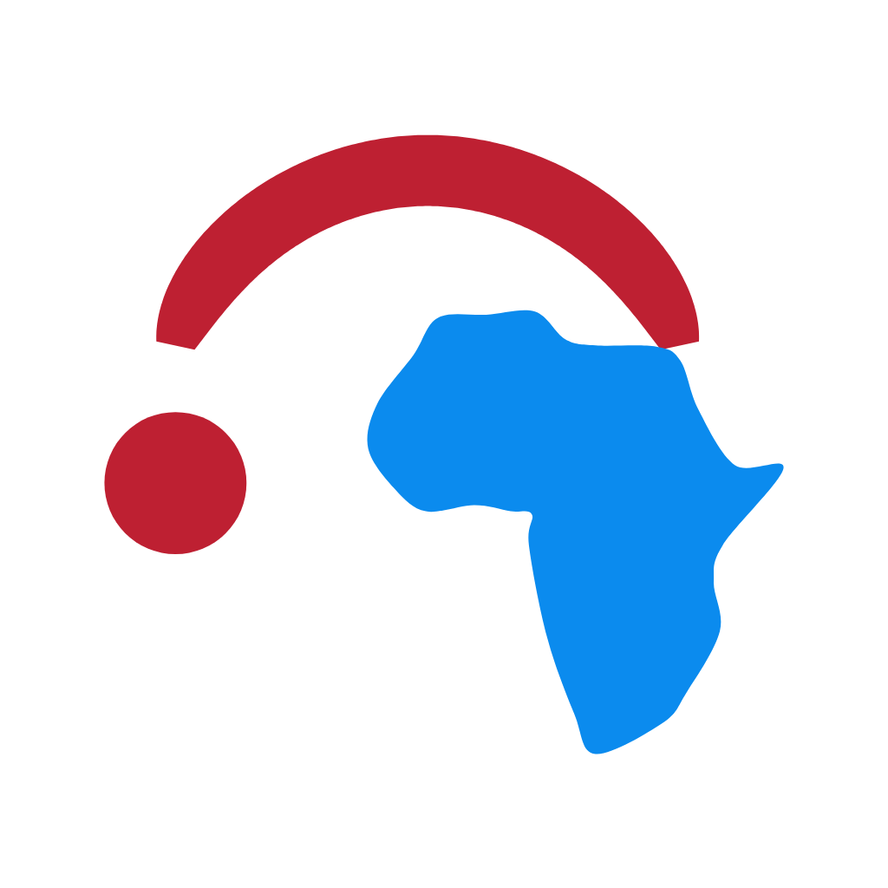

Communication
Promote mutual communication and support among UTokyo alumni across Africa.

Africa Akamonkai UTokyo Africa Alumni Associationアフリカ赤門会
UTokyo Africa Alumni Association
Connecting the University of Tokyo and alumni across Africa through mutual support, research, collaboration, and community.
Get in TouchAbout
UTokyo alumni from Africa are spread across the continent, but an organized pan-African network has not yet been fully developed. Africa Akamonkai aims to connect alumni, current students, and early-career researchers through mutual support and collaboration.
Mission
Promote mutual communication and support among UTokyo alumni across Africa.
Support current students and early-career researchers.
Serve as a bridge between Japan and Africa in academic, business, and social fields.
Increase the visibility of UTokyo research and education activities in Africa.
Foster innovation and entrepreneurship within the alumni community.
Organization
Activities
Alumni database, regular exchanges, and online information sharing.
Tokyo Branch support, mentoring, and scholarship or research opportunity sharing.
Research collaboration, business matching, entrepreneurship, and visiting researcher support.
Visibility activities, annual reports, newsletters, and social media communication.
Members
Founding Member
Biography: To be updated.
Founding Member
Biography: To be updated.
Founding Member
Biography: To be updated.
Founding Member
Biography: To be updated.
News
To be updated.
Contact
For inquiries, we recommend contacting us via LinkedIn.
Email: africa.akamon@gmail.com
LinkedIn: linkedin.com/company/utokyo-africa
Facebook: To be updated.